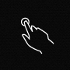

Hammer.js
A javascript library for multi-touch gestures
You can touch me...
Bust a few moves...Why use Hammer.js?
- easy implementation of touch events in your website
- lightweight with only 2kb (minified and gzip), easy to dig into
- focused javascript library, only for multi-touch gestures
- completely standalone, and a jQuery plugin is available
Gesture supported by Hammer.js
- Tap
- Double Tap
 Swipe
Swipe
 Hold
Hold
 Transform
Transform
- Drag